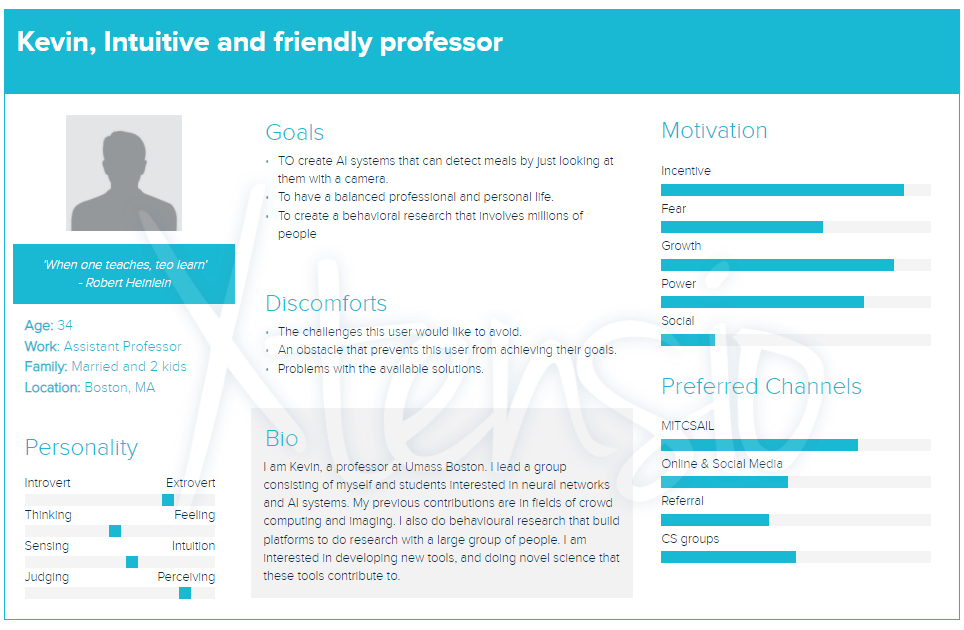

1. User Analysis
We have interviewed 4 people out which three personas were mentioned below.
- Persona's help us to easily represent users in general.
- They help in understanding user needs and help in understanding the negetive aspects in website.
- From the Inputs it is observed that the users may find it difficult to navigate and find their requirement.
- To compensate that we need to create navigation bar of some kind.
- Also, it is tough to monitor student activity with groups and individual collaborations.
- This can be avoided by image and code tracking done through the website.
- Too much of interface concentration can mislead and may not provide the required platform to community.
- This need to be watched as the main motive of the website depends on this.
- This can be avoided by constant review and feedback from users.
On the basis of our interviews these are the user personas for each class:

User-1: General student persona of a graduate student at Umass.

User-2: Professor in Umass Boston with his interests and bio.